건축설비산업기사 (2011-06-12 기출문제)
1과목: 건축일반
1. 동자기둥 위에 수평으로 걸쳐 대어 서까래 또는 지붕널을 받는 가로재를 무엇이라 하는가?
- 가새
- 지붕보
- 중도리
- 처마도리
(정답률: 65%)

2. 폭이 춤보다 큰 넓은 보(wide girder)를 선택하여 설계하는 이유로 가장 적합한 것은?
- 강성이 증가되어 구조 효율이 향상되므로
- 콘크리트량이 줄어들기 때문에
- 층고를 줄이거나, 천장 공간을 효율적으로 활용하기 위하여
- 설계 디자인이 자유롭기 때문에
(정답률: 80%)
3. 주택의 실내동선계획에 대한 설명으로 옳지 않은 것은?
- 동선은 현관으로부터 시작된다.
- 짧고 직선적이어야 한다.
- 가능한 다른 행위를 방해하지 말아야 한다.
- 거실을 통과하여 각 실에 접근하는 것이 좋다.
(정답률: 88%)
4. 경제적 채산성이 우선시 되는 사무소 유형은?
- 전용사무소
- 준전용사무소
- 임대사무소
- 준임대사무소
(정답률: 82%)
5. 철골 트러스에 관한 설명 중 옳지 않은 것은?
- 트러스의 절점은 부재의 중심선과 응력 중심선을 일치시키는 것이 원칙이다.
- 중도리는 가능한 트러스 상현재의 중앙에 위치시키는 것이 역학적으로 유리하다.
- 트러스의 춤(depth)을 키우면 중앙부 처짐에 대하여 유리하다.
- 트러스 부재의 단면은 그 중심에 대하여 대칭단면이 역학적으로 유리하다.
(정답률: 59%)
6. 아파트의 평면 형식 중 홀형에 대한 설명으로 옳지 않은 것은?
- 프라이버시가 좋지 않으며 시끄럽다.
- I형을 제외하고 통풍이 불리한 편이다.
- 통행부 면적이 작아서 건물의 이용도가 높다.
- 좁은 대지에서 집약형 주거 등이 가능하다.
(정답률: 71%)
7. 학교의 교실계획에 대한 설명 중 옳지 않은 것은?
- 종합교실형은 초등학교 저학년에 적합하다.
- 특별교실은 동선이 짧게 되도록 일반교실에서 근접 시킨다.
- 교과교실형은 모든 교실이 특정 교과를 위해 만들어진다.
- 행정·관리부분은 중앙에 가까운 위치에 배치한다.
(정답률: 63%)
8. 다음 호텔 중 시티호텔에 속하지 않는 것은?
- 온천호텔
- 터미널호텔
- 커머셜호텔
- 아파트먼트호텔
(정답률: 69%)
9. 병원의 설계계획에서 일반적으로 면적 산출의 기준이 되는 것은?
- 입원환자의 병상수
- 간호사 수
- 의사 수
- 전체 종업원 수
(정답률: 83%)
10. 기초에 대한 설명 중 옳지 않은 것은?
- 기초를 시공하기 위해서는 먼저 터파기를 하고, 대규모 건축물인 경우에는 터파기 측면에 흙막이를 한다.
- 말뚝은 기초에서의 압축력을 주로 받으나 인발력(引拔力)을 받는 경우에는 말뚝두부(頭部)를 기초속에 고정한다.
- 건물 전체에 두꺼운 슬래브판을 설치하여 모든 기둥 또는 벽의 힘을 받게 한 것을 온통기초라 한다.
- 터파기밑에는 버림콘크리트를 타설한 후 잡석 지정을 한다.
(정답률: 61%)
11. 반자의 대한 설명 중 옳지 않은 것은?
- 층단반자는 천정 주위 또는 구석일부의 반자를 일단 낮게하여 일반반자와 대조가 되게 한 것이다.
- 살대반자에서 살대는 면을 접고 반자돌림에 통맞춤으로 한다.
- 치받이 널반자에서 널이음은 반자틀심에 일정히 엇갈려 있게 한다.
- 우물반자에서 반자틀이 서로 +자로 만나는 곳은 반턱맞춤을 한다.
(정답률: 54%)
12. 아파트의 발코니에 대한 설명 중 옳지 않은 것은?
- 난간의 높이는 최소 0.7m 이상으로 설치한다.
- 유아의 유희 및 일광욕, 침구, 세탁물 등의 건조장등으로 이용된다.
- 발판이 될 수 있는 것은 설계하지 말아야 한다.
- 옆집과의 격벽은 비상시에 옆집과 연결이 될 수 있다.
(정답률: 71%)
13. 양쪽 방향으로 경사진 지붕으로 맞배지붕이라고도 불리우는 것은?
- 외쪽지붕
- 모양지붕
- 박공지붕
- 맨사드지붕
(정답률: 71%)
14. 도서관 계획에 대해 옳게 설명한 것은?
- 도서관은 이용자측과 직원, 자료의 출입구를 가능한 별도로 계획하는 것이 바람직하다.
- 열람실은 충고를 가능한 한 낮게 하여 공간의 활용을 높인다.
- 고서나 특수 자료는 개가식이 좋다.
- 서고는 인공조명보다 자연채광이 좋다.
(정답률: 58%)
15. 상점의 판매장 조명에 관한 설명 중 옳지 않은 것은?
- 천장면에는 형광등이 전체조명으로서는 좋다.
- 천장면을 밝게 하는 것은 상품이 덜 돋보이게 되어 좋지 않다.
- 현휘현상은 쇼윈도우의 장식효과에 도움을 준다.
- 주광색(奏光色)의 전구가 필요한 상점은 의료품점, 약국 등이다.
(정답률: 65%)
16. 사무소 건축에서 코어 시스템(core system)을 채용하는 이유로 옳지 않은 것은?
- 사용상의 편리
- 설비비의 절약
- 구조적인 이점
- 독립성의 보장
(정답률: 79%)
17. 단독주택 계획 시 유희실, 사교실의 기능을 갖는 실의 가장 바람직한 방위는?
- 동남
- 남서
- 북서
- 동북
(정답률: 67%)
18. 고층건물에 적용하는 커튼윌에 대한 설명으로 옳지 않은 것은?
- 건축물을 경량화 시킬 수 있다.
- 부분적인 프리패브리케이션이 가능하다.
- 공기단축이 어렵다.
- 가설비계의 사용을 절감할 수 있다.
(정답률: 76%)
19. 조명에 악센트를 주며 상품 전시를 대상으로 하여 스포트라이트가 사용되는 조명은?
- 직접조명
- 간접조명
- 국부조명
- 반간접조명
(정답률: 86%)
20. 지내력시험에 관한 설명 중 옳지 않은 것은?
- 지반의 허용지내력도를 알기 위한 시험이다.
- 하중증가 없이 침하량만 증가하는 상태가 되면 가력을 중지한다.
- 장기허용지내력도는 단기허용지내력도의 통상 2배로 한다.
- 지내력 시험용의 재하판은 보통 30cm각 철판을 사용한다.
(정답률: 58%)
2과목: 위생설비
21. 배수관의 시공 및 설계에 관해 설명 중 옳지 않은 것은?
- 배수수평관의 관경이 클수록 구배를 크게한다.
- 흐름의 정체가 일어날 수 있는 배관은 피하도록 한다.
- 배수수직관의 관경은 최하부부터 최상부까지 동일하게 한다.
- 배수수평주관 및 배수수평지관의 기점에는 원칙적으로 청소구를 설치한다.
(정답률: 61%)
22. 특수통기방식 중 섹스티아 시스템에서 다음과 같은 역할을 하는 것은?
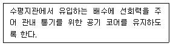
- 스트레이너
- 도피통기관
- 섹스티아 이음쇠
- 섹스티아 밴드관
(정답률: 67%)
23. 10℃의 물을 70℃로 가열하여 매시 500L씩 공급하려한다. 필요한 가스용량은? (단, 가스의 발열량은 42,000kj/m3, 열효율은 60%,물의 비열은 4.2kj/kg·K이다.)
- 3m3/h
- 4m3/h
- 5m3/h
- 6m3/h
(정답률: 46%)
24. 급수방식 중 고가수조방식에 대한 설명으로 옳지 않은 것은?
- 급수압력이 일정하다.
- 대규모의 급수 수요에 쉽게 대응할 수 있다.
- 단수시에도 일정량의 급수를 계속할 수 있다.
- 위생성 및 유지·관리 측면에서 가장 바람직한 방식이다.
(정답률: 69%)
25. 관균등표에 의한 관경 결정과 관련하여 다음과 같은 내용을 나타내는 식은?
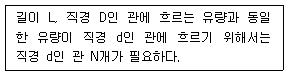
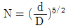
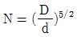
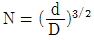
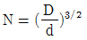
(정답률: 73%)
26. 다음 중 세정밸브 대변기에 버큠 브레이커를 설치하는 가장 주된 이유는?
- 급수오염을 방지하기 위해
- 급수압력을 낮추기 위해
- 급수소음을 줄이기 위해
- 취기를 방지하기 위해
(정답률: 36%)
27. 위생기구 유니트화의 이점과 가장 거리가 먼 것은?
- 비용을 절감할 수 있다.
- 공기를 단축시킬 수 있다.
- 균일한 급수압력을 얻을 수 있다.
- 현장 작업 스페이스를 절감할 수 있다.
(정답률: 54%)
28. 통기관 관경결정의 기본 원칙으로 옳지 않은 것은?
- 건물의 배수탱크에 설치하는 통기관의 관경은 30mm이상으로 한다.
- 신정통기관의 관경은 배수수직관의 관경보다 작게해서는 안된다.
- 각개통기관의 관경은 그것이 접속되는 배수관 관경의 1/2이상으로 한다.
- 결합통기관의 관경은 통기수직관과 배수수직관 중 작은 쪽 관경 이상으로 한다.
(정답률: 63%)
29. 물의 경도는 물 속에 녹아있는 칼슘, 마그네슘 등의 염류의 양을 무엇의 농도로 환산하여 나타낸 것인가?
- 탄산나트륨
- 탄산칼륨
- 염화나트륨
- 염화마그네슘
(정답률: 78%)
30. 다음 중 조기반응형 스프링클러헤드를 설치하여야하는 장소에 해당하지 않는 것은?
- 학교의 교실
- 병원의 입원실
- 숙박시설의 침실
- 공동주택의 거실
(정답률: 35%)
31. 배관에 사용되는 신축이음쇠 중 2개 이상의 엘보를 사용하여 이음부의 나사 회전을 이용해서 배관의 신축을 흡수하는 것은?
- 루프형
- 스위블형
- 슬리브형
- 벨로우즈형
(정답률: 73%)
32. 양수량이 1m3/min, 양정이 80m인 펌프에서 회전수를 원래 보다 10% 증가시켰을 경우, 회전수 변화 후 의 양수량은?
- 1.1m3/min
- 1.21m3/min
- 1.33m3/min
- 1.46m3/min
(정답률: 43%)
33. 급수배관에서 슬리브(Sleeve)를 설치하는 이유로 가장 적당한 것은?
- 수격작용방지
- 관의 부식방지
- 관의 동파방지
- 관의 수리시 교체의 용이
(정답률: 70%)
34. 다음 설명에 알맞은 배관의 신축이음쇠는?
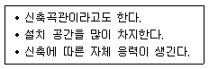
- 슬리브형
- 벨로우즈형
- 스위블형
- 루프형
(정답률: 57%)
35. 다음 설명에 알맞은 배수 트랩의 종류는?
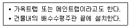
- U트랩
- S트랩
- P트랩
- 드럼 트랩
(정답률: 79%)
36. 고가수조방식의 급수법에서 배관계통을 가장 바르게 나타낸 것은?
- 저수조→양수펌프→양수관→고가수조→급수관→수도꼭지
- 저수조→양수관→양수펌프→급수관→고가수조→수도꼭지
- 저수조→양수펌프→급수관→고가수조→양수관→수도꼭지
- 저수조→급수관→양수펌프→양수관→고가수조→수도꼭지
(정답률: 56%)
37. 생물화학적 오수처리방법 중 생물막법에서 사용되는 접촉재가 갖추어야 할 조건과 가장 거리가 먼 것은?
- 점성이 클 것
- 비표면적이 클 것
- 생물막이 부착되기 쉬울 것
- 생물막에 의한 폐쇄가 어려울 것
(정답률: 66%)
38. 다음 중 강제순환식 급탕배관의 구배로 가장 알맞은 것은?
- 1 : 100
- 1 : 150
- 1 : 200
- 1 : 250
(정답률: 61%)
39. 다음의 옥내소화전방수구에 관한 설명 중 ( ) 안에 알맞은 내용은?
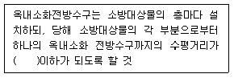
- 25m
- 30m
- 35m
- 45m
(정답률: 58%)
40. 급탕설비의 안전장치 중 팽창관에 관한 설명으로 옳은 것은?
- 팽창관의 배수는 직접배수로 한다.
- 팽창관에는 밸브를 설치하여야 한다.
- 팽창관에는 소음이 발생하므로 사일렌서를 설치한다.
- 보일러, 저탕조 등 밀폐 가열장치 내의 압력 상승을 도피시키기 위해 사용된다.
(정답률: 58%)
3과목: 공기조화설비
41. 다음과 같은 특징을 갖는 환기방식은?
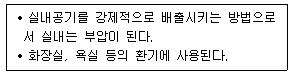
- 제1종 환기(급기팬과 배기팬의 조합)
- 제2종 환기(급기팬과 자연배기의 조합)
- 제3종 환기(자연급기와 배기팬의 조합)
- 중력환기(자연급기와 자연배기의 조합)
(정답률: 74%)
42. 다음의 냉방부하의 종류 중 잠열을 포함하고 있지 않는 것은?
- 인체의 발생열량
- 덕트로부터의 취득열량
- 극간풍에 의한 취득열량
- 외기의 도입으로 인한 취득열량
(정답률: 53%)
43. 다음 설명 중 ( )안에 알맞은 펌프의 종류는?
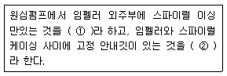
- ① 피스톤 펌프, ② 터빈 펌프
- ① 볼류트 펌프, ② 터빈 펌프
- ① 터빈 펌프, ② 볼류트 펌프
- ① 터빈 펌프, ② 피스톤 펌프
(정답률: 52%)
44. 다음과 같은 특징을 갖는 밸브는?
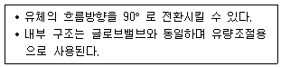
- 콕
- 볼밸브
- 앵글밸브
- 체크밸브
(정답률: 67%)
45. 온도변화에 의한 배관의 수축이나 팽창량을 흡수하기 위해 사용되는 신축이음쇠에 해당하지 않는 것은?
- 벨로즈형
- 슬리브형
- 루프형
- 플랜지형
(정답률: 56%)
46. 터보식 냉동기에 대한 설명으로 옳지 않은 것은?
- 증기압축식 냉동기이다.
- 흡수식에 비해 소음 및 진동이 심하다.
- 회전식 압축방법으로 냉매증기를 압축하는 형식이다.
- 대용량에서는 압축효율이 좋고 비례 제어가 가능하다.
(정답률: 38%)
47. 증발량 100Kg/h인 증기보일러에서 발생 증기의 엔탈피가 2800kJ/kg, 보일러 입구에서 물의 엔탈피가 340kJ/kg일 때, 이 보일러의 환산증발량은? (단, 100℃에서 물의 증발장열은 2257kJ/kg 이다.)
- 98kg/h
- 102kg/h
- 109kg/h
- 123kg/h
(정답률: 52%)
48. 사무실에 시간당 9000kJ의 열을 방출하는 복사기가 있다. 실내온도를 22℃로 유지하기 위한 환기량은? (단, 외기온도 10℃,공기의 밀도 1.2kg/m3,공기의 정압비열 1.01kJ/kg`K, 열관류율은 무시한다.)
- 618.8 m3/h
- 678.4 m3/h
- 720.2 m3/h
- 754.6 m3/h
(정답률: 25%)
49. 다음 중 풍량조절댐퍼에 해당하지 않는 것은?
- 스모크 댐퍼
- 평행익형 댐퍼
- 스플릿 댐퍼
- 버터플라이 댐퍼
(정답률: 64%)
50. 어느 송풍기의 회전수가 750rpm일 때 송풍량이 100m3/min, 축동력 1.5kW, 송풍기 전압 400Pa이다. 이 송풍기의 회전수를 1000rpm으로 변화시켰을 때 전압은 얼마로 되는가?
- 400Pa
- 533.3Pa
- 711.1Pa
- 941.1Pa
(정답률: 49%)
51. 온수난방에 대한 설명으로 옳은 것은?
- 온수순환펌프는 반드시 진공펌프를 사용한다.
- 증기난방보다 열용량이 적으므로 예열시간이 짧다.
- 증기난방과는 달리 배관의 신축은 고려하지 않아도 된다.
- 증기난방에 비하여 난방부하 변동에 따른 온도조절이 용이하다.
(정답률: 58%)
52. 냉방시 벽체면적 30m2을 통해 취득되는 관류 열량은? (단, 벽체의 열관류율은 0.58W/m2·K이고, 상당외기 온도차는 10℃이다.)
- 87W
- 174W
- 348W
- 523W
(정답률: 65%)
53. 건구온도 27℃이며 건공기 1Kg에 수증기 0.014Kg을 포함하고 있는 습공기의 절대습도는?
- 0.014Kg/Kg'
- 1.4%
- 71.43Kg/Kg'
- 71.43%
(정답률: 38%)
54. 결로현상에 대한 설명으로 옳지 않은 것은?
- 단열이 잘 된 벽체는 내부결로는 없으나 표면결로가 발생하기 쉽다.
- 결로현상은 공기와 접한 물체의 온도가 그 공기의 노점온도보다 낮을 때 일어난다.
- 습공기가 차가운 벽이나 천장, 바닥 등에 닿으면 공기 중에 함유된 수분이 응축되어 그 표면에 이슬이 맺히는 현상이다.
- 난방시 단열이 잘 되지 않은 외벽이나 이곳에 이웃하는 내벽, 최상층의 천장, 유리창 등에서 표면결로가 발생하기 쉽다.
(정답률: 54%)
55. 덕트에 대한 설명으로 옳은 것은?
- 저속덕트와 고속덕트는 주덕트내 풍속 25m/s를 기준으로 구분한다.
- 장방형 덕트는 주로 고속덕트에, 원형 덕트는 저속덕트에 사용한다.
- 덕트의 치수 결정법 중 등마찰손실법은 덕트 내의 풍속을 일정하게 유지할 수 있도록 덕트치수를 결정하는 방법이다.
- 같은 양의 공기가 덕트를 통해 송풍될 때 풍속을 높게 하면 덕트의 단면치수가 작아도 되므로 설치 스페이스를 적게 차지한다.
(정답률: 45%)
56. 다음 중 원심형 송풍기로서 날개가 전곡형(前曲形)인 것은?
- 다익형
- 튜브형
- 리미트로드형
- 터보형
(정답률: 63%)
57. 다음과 같은 특징을 갖는 공기조화방식은?
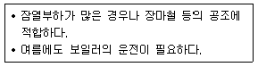
- 2중덕트방식
- 각층유니트방식
- 팬코일유니트방식
- 단일덕트재열방식
(정답률: 37%)
58. 공기조화기 내의 가습이나 강습 장치에 엘리미네이터(eliminator)를 설치하는 가장 주된 목적은?
- 폐열을 회수하기 위하여
- 분진 등을 정화하기 위하여
- 내부의 청소 및 점검을 위하여
- 분우수가 밖으로 나가는 것을 방지하기 위하여
(정답률: 74%)
59. 다음과 같은 특징을 갖는 축류형 취출구는?
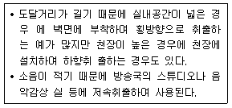
- 노즐형
- 웨이형
- 브리즈 라인형
- 아네모스탯형
(정답률: 56%)
60. 다음 중 배관에서 발생하는 워터 해머를 방지하기 위한 방법으로 옳지 않은 것은?
- 감압밸브를 설치한다.
- 관내 유속을 느리게 한다.
- 양정이 높은 펌프를 사용한다.
- 기구류 근처에 에어챔버(Air Chamber)를 설치한다.
(정답률: 69%)
4과목: 건축설비관계법규
61. 건축물을 건축하는 경우 국토해양부령으로 정하는 구조 기준 등에 따라 그 구조의 안전을 확인하여야 하는 대상 건축물에 속하지 않는 것은?
- 높이가 13m인 건축물
- 층수가 3층인 건축물
- 처마높이가 9m인 건축물
- 기둥과 기둥 사이의 거리가 9m인 건축물
(정답률: 53%)
62. 다음 중 소방검사의 행위에 속하지 않는 것은?
- 관계인에게 필요한 보고를 하도록 하는 것
- 소방대상물의 위치·구조·설비 또는 관리의 상황을 검사하는 것
- 소방대상물의 이전·제거, 사용 금지 및 제한 등의 개수명령을 하는 것
- 소방대상물의 위치·구조·설비 또는 관리의 상황에 관하여 관계인에게 질문을 하는 것
(정답률: 66%)
63. 건축물의 에너지절약설계기준에 따른 건축부분의 권장사항으로 옳지 않은 것은?
- 외벽 부위는 외단열로 시공한다.
- 건축물의 체적에 대한 외피면적의 비는 가능한 크게한다.
- 공동주택은 인동간격을 넓게 하여 저층부의 일사수열량을 증대시킨다.
- 거실의 층고 및 반자 높이는 실의 용도와 기능에 지장을 주지 않는 범위 내에서 가능한 낮게 한다.
(정답률: 70%)
64. 방화관리자를 두어야 하는 특정소방대상물로서 1급 방화 관리대상물의 연면적 기준은?
- 5,000m2이상
- 10,000m2이상
- 15,000m2이상
- 20,000m2이상
(정답률: 53%)
65. 건축물의 3층 이상인 층으로서 직통계단 외에 그 층으로부터 지상으로 통하는 옥외피난계단을 따로 설치하여야 하는 대상에 속하지 않는 것은? (단, 피난층이 아닌 경우)
- 위락시설 중 주점영업의 용도로 쓰는 층으로서 그 층 거실의 바닥면적의 합계가 300m2 인 것
- 문화 및 집회시설 중 공연장의 용도로 쓰는 층으로서 그 층 거실의 바닥면적의 합계가 300m2 인 것
- 문화 및 집회시설 중 관람장의 용도로 쓰는 층으로서 그 층 거실의 바닥면적의 합계가 1,000m2 인 것
- 문화 및 집회시설 중 집회장의 용도로 쓰는 층으로 서 그 층 거실의 바닥면적의 합계가 1,000m2 인 것
(정답률: 40%)
66. 문화 및 집회시설 중 공연장으로서 6층 이상의 거실면적의 합계가 8,000m2 인 건축물에 설치해야 하는 승용승강의 최소 대수는? (단, 8인승 승강기의 경우)
- 3대
- 4대
- 5대
- 6대
(정답률: 42%)
67. 다음 중 자동식소화기를 설치하여야 하는 특정소방대상물은?
- 아파트
- 의료시설
- 숙박시설
- 업무시설
(정답률: 60%)
68. 다음의 소방시설 중 경보설비에 해당하지 않는 것은?
- 비상방송설비
- 자동화재탐지설비
- 자동화재속보설비
- 무선통신보조설비
(정답률: 65%)
69. 하수도법에서 다음과 같이 정의되는 용어는?
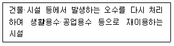
- 하수도
- 중수도
- 개인하수도
- 공공처리수재이용시설
(정답률: 56%)
70. 축냉식 전기냉방설비의 설계기준 내용으로 옳지 않은 것은?
- 축열조는 보온을 철저히 하여 열손실과 결로를 방지 하여야 한다.
- 축열조는 축냉 및 방냉운전을 반복적으로 수행하는데 적합한 재질의 축냉재를 사용하여야 한다.
- 열교환기는 시간당 최대냉방열량을 처리할 수 있는 용량 이하로 설치하여야 한다.
- 자동제어설비는 필요한 경우 수동조작이 가능하도록 하여야 하며 감시기능 등을 갖추어야 한다.
(정답률: 68%)
71. 국토해양부령으로 정하는 기준에 따라 배연설비를 하여야 하는 대상에 속하지 않는 것은? (단, 6층 이상인 건축물로서 피난층이 아닌 경우)
- 업무시설의 거실
- 공동주택의 거실
- 숙박시설의 거실
- 장례식장의 거실
(정답률: 50%)
72. 연면적 200제곱미터를 초과하는 건축물에 설치하는 계단에 관한 기준 내용으로 옳지 않은 것은?
- 초등학교의 옥내계단인 경우에는 계단 및 계단창의 너비는 1.2m 이상으로 하여야 한다.
- 높이가 3m를 넘는 계단에는 높이 3m 이내마다 너비 1.2m 이상의 계단창을 설치하여야 한다.
- 단높이가 15cm 이하이고, 단너비가 30cm 이상인 계단에는 계단의 중간에 난간을 설치하지 않아도 된다.
- 높이가 1m를 넘는 계단 및 계단창의 양옆에는 난간(벽 또는 이에 대치되는 것을 포함)을 설치하여야 한다.
(정답률: 44%)
73. 다음의 스프링클러설비의 설치면제 요건에 관한 기준 내용 중 ( )안에 알맞은 것은?
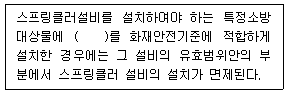
- 자동화재탐지설비
- 옥외소화전설비
- 물분무등소화설비
- 옥내소화전설비
(정답률: 73%)
74. 기존 건축물을 철거하여 건축물이 없는 대지 안에 종전의 규모의 범위를 초과하여 새로 건축물을 축조하는 건축행위는?
- 신축
- 증축
- 개축
- 재축
(정답률: 59%)
75. 건축물의 건축허가를 신청할 때 에너지절약계획서를 제출하여야 하는 대상 건축물에 속하지 않는 것은? (단, 해당 용도에 사용되는 바닥면적의 합계가 2,000m2 인 경우)
- 숙박시설
- 의료시설
- 업무시설
- 공동주택 중 기숙사
(정답률: 47%)
76. 다음의 직통계단의 설치에 관한 기준 내용 중 ( ) 안에 알맞은 것은? (단, 기타 단서 조항은 무시한다.)
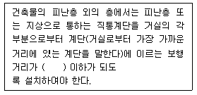
- 30m
- 40m
- 50m
- 60m
(정답률: 63%)
77. 다음 중 1급 방화관리대상물에 두어야 할 방화관리자의 선임대상자에 속하지 않는 자는?
- 소방시설관리사 자격을 가진 자
- 소방설비산업기사 자격을 가진 자
- 소방공무원으로 근무한 경력이 5년 있는 자
- 산업안전기사 자격을 가진 자로서 방화관리에 관한 실무경력이 1년 있는 자
(정답률: 72%)
78. 다음 중 건축법에 따른 제1종 근린생활시설에 해당되지 않는 것은?
- 치과의원
- 변전소
- 일반음식점
- 공중화장실
(정답률: 71%)
79. 다음의 방화벽의 구조에 관한 기준 내용 중 ( ) 안에 알맞은 것은?
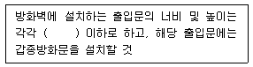
- 1.2m
- 1.5m
- 2.1m
- 2.5m
(정답률: 24%)
80. 다음 중 내화구조에 해당하지 않는 것은?
- 철골조의 계단
- 철근콘크리트조의 지붕
- 철근콘크리트조로서 두께가 8cm 인 바닥
- 작은 지름이 25cm 인 철근콘크리트조의 기둥
(정답률: 62%)